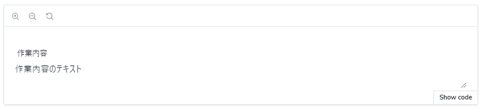
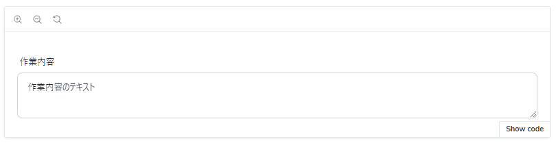
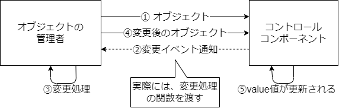
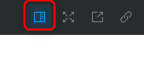
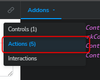
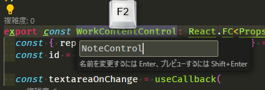
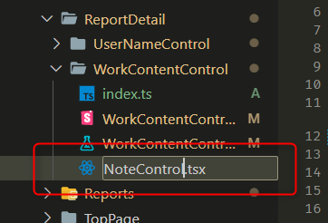
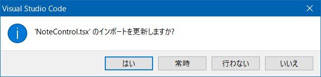
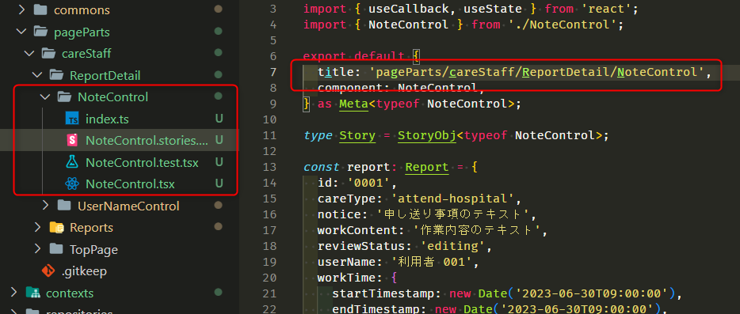

作業内容コントロールの実装
次に、簡単に実装できそうなコントロールとして、作業内容を表示するコントロールを作成します。
ここでは、<textarea>コントロールを使用する単純な物となっています。
コンポーネントの作成
Hygen で作成します。
| $ npx hygen component new
✔ コンポーネント名を入力してください。 · WorkContentControl
✔ どこに作りますか？'src/components/'以下のパスを指定してください。 · pageParts/careStaff/ReportDetail
Loaded templates: _templates
added: src/components/pageParts/careStaff/ReportDetail/WorkContentControl/WorkContentControl.tsx
added: src/components/pageParts/careStaff/ReportDetail/WorkContentControl/WorkContentControl.stories.tsx
added: src/components/pageParts/careStaff/ReportDetail/WorkContentControl/WorkContentControl.test.tsx
added: src/components/pageParts/careStaff/ReportDetail/WorkContentControl/index.ts
|
テストとしては、ラベルが表示されていることと、
引数として、Report のオブジェクトを受け取り、その中の workContent をテキストエリアに表示する必要があるので、
そのテストを書きます。
| src/components/pageParts/careStaff/ReportDetail/WorkContentControle/WorkContentControle.test.tsx |
|---|
| /**
* @jest-environment jsdom
*/
import { Report } from '@/contexts/work-reports/entities/reports/reportSchema';
import '@testing-library/jest-dom';
import { render as _render, screen } from '@testing-library/react';
import { ComponentProps } from 'react';
import { WorkContentControl } from './WorkContentControl';
const render = (props: ComponentProps<typeof WorkContentControl>) => {
return _render(<WorkContentControl {...props} />);
};
const report: Report = {
id: '0001',
careType: 'attend-hospital',
notice: '申し送り事項のテキスト',
workContent: '作業内容のテキスト',
reviewStatus: 'editing',
userName: '利用者 001',
workTime: {
startTimestamp: new Date('2023-06-30T09:00:00'),
endTimestamp: new Date('2023-06-30T09:00:00'),
},
};
test('renders', () => {
render({
report,
});
// ラベルの確認
const label = screen.getByText('作業内容');
expect(label).toBeInTheDocument();
// テキストエリアの確認
const textbox = screen.getByRole('textbox');
expect(textbox).toHaveValue('作業内容のテキスト');
});
|
実装は次のようになります。
| src/components/pageParts/careStaff/ReportDetail/WorkContentControle/WorkContentControle.tsx |
|---|
| import { Label } from '@/components/commons/Label';
import { Report } from '@/contexts/work-reports/entities/reports/reportSchema';
import React from 'react';
type Props = {
report: Report;
};
export const WorkContentControl: React.FC<Props> = (props) => {
const { report } = props;
return (
<Label id="work-content" label="作業内容">
<textarea id="work-content" value={report.workContent} />
</Label>
);
};
|
テストが成功しました。
ここで、<textarea>のidに固定の文字列を入れています。
idはページ内で一意である必要があります。
コンポーネントが汎用的なもので、１つのページで複数使われるような場合、
id が固定だと重複してしまします。
このコンポーネントは共通で使われるものでないので、問題にはなりにくいのですが、
ここでは、idを固定しないように修正します。
| src/components/pageParts/careStaff/ReportDetail/WorkContentControle/WorkContentControle.tsx |
|---|
| import React, { useId } from 'react';
// 略
export const WorkContentControl: React.FC<Props> = (props) => {
const { report } = props;
const id = useId();
return (
<Label id={id} label="作業内容">
<textarea id={id} value={report.workContent} />
</Label>
);
};
|
このように、一意なIDが必要な場合は、useId() を利用することで、
コンポーネントごとにランダムで一意なIDを取得することができます。
コンポーネントが再レンダリングされても、同一コンポーネント内であれば、IDが変わることは有りません。
見た目と動きを確認する
Storybook で見た目を動きを確認します。
| src/components/pageParts/careStaff/ReportDetail/WorkContentControle/WorkContentControle.stories.tsx |
|---|
| import { Report } from "@/contexts/work-reports/entities/reports/reportSchema";
import { Meta, StoryObj } from "@storybook/react";
import { WorkContentControl } from "./WorkContentControl";
export default {
title: "pageParts/careStaff/ReportDetail/WorkContentControl",
component: WorkContentControl,
} as Meta<typeof WorkContentControl>;
type Story = StoryObj<typeof WorkContentControl>;
const report: Report = {
id: "0001",
careType: "attend-hospital",
notice: "申し送り事項のテキスト",
workContent: "作業内容のテキスト",
reviewStatus: "editing",
userName: "利用者 001",
workTime: {
startTimestamp: new Date("2023-06-30T09:00:00"),
endTimestamp: new Date("2023-06-30T09:00:00"),
},
};
export const Default: Story = {
args: {
report,
},
};
|

textarea のスタイルが無いので、DaisyUI のスタイルを当てましょう。
Textarea テキストエリア — Tailwind CSSコンポーネント
| src/components/pageParts/careStaff/ReportDetail/WorkContentControle/WorkContentControle.tsx |
|---|
| return (
<Label id={id} label="作業内容">
<textarea
id={id}
value={report.workContent}
className="textarea textarea-bordered"
/>
</Label>
);
|

これで良いでしょう。
変更イベントの実装
動きを確認するために、テキストエリアに文字を入力してみてください。
おそらく、文字が入らないと思います。
これは、<textarea> の value にプロパティの値を入れているので、常にvalueがその値になっているためです。
コンポーネント指向UI設計では、コンポーネントの変更を、その値を管理している者に通知し、
そこで変更処理を行い、その変更をプロパティとして受け取り、それをvalueに反映する、ということを行います。

何故こんなややこしいことするのか、と思われるかもしれません。
しかし、データの管理を1箇所で行うことで、その変更処理が一元化され管理がわかりやすくなるとともに、
コントロールのコンポーネントは、その値を受け取りそれを表示するだけになるので、非常にシンプルになります。
このコンポーネントに、変更イベントonChangを実装します。そのためのテストを書きます。
テストでは、テキストボックスを書き換えることのシミュ‐レートを行います。
| src/components/pageParts/careStaff/ReportDetail/WorkContentControle/WorkContentControle.test.tsx |
|---|
| test("on change", () => {
const onChange = jest.fn();
render({
report,
onChange,
});
// テキストエリアの確認
const textbox = screen.getByRole("textbox");
// テキストエリアの内容を変更する
fireEvent.change(textbox, {
target: {
value: "作業内容のテキストを変更しました",
},
});
// onChange が呼び出されていることを確認する
expect(onChange).toBeCalledWith("作業内容のテキストを変更しました");
});
|
fireEvent.changeはテキストボックスなどのonChangeイベントの発火をシミュレートする関数で、
第1引数に対象の要素、第2引数にHTML DOMのonChangeイベントの引数に渡されるオブジェクトを指定します。
テキストエリアのonChageが発火したら、このコンポーネントのonChangeコールバック関数が実行されること、
その時の引数が、変更後のテキストエリアの文字列がworkContentプロパティにはいった、オブジェクトであることを確認します。
関数のコールや引数を調べるために、コンポーネントに渡す関数は Jest のモック関数としています。
実装ですが、まずコンポーネントのonChangeプロパティの定義から行います。
| src/components/pageParts/careStaff/ReportDetail/WorkContentControle/WorkContentControle.tsx |
|---|
| type Props = {
report: Report;
onChange: (args: string) => void;
};
|
ここでは、引数が文字列のworkContentプロパティのみのオブジェクトで、戻り値がvoidである関数を指定しています。
このようなTypeScriptでの関数型定義は、多く使いますので覚えておきましょう。
| src/components/pageParts/careStaff/ReportDetail/WorkContentControle/WorkContentControle.tsx |
|---|
| export const WorkContentControl: React.FC<Props> = (props) => {
const { report, onChange } = props;
const id = useId();
const textareaOnChange = useCallback(
(e: ChangeEvent<HTMLTextAreaElement>) => {
onChange(e.target.value);
},
[onChange],
);
return (
<Label id={id} label="作業内容">
<textarea
id={id}
value={report.workContent}
className="textarea textarea-bordered"
onChange={textareaOnChange}
/>
</Label>
);
};
|
textareaのonChangeに渡す関数をuseCallbackで定義しています。
useCallbackではなく直接関数を書いても動きますが、そのばあい内容が同じでも関数が毎回生成されるため、
React でのパフォーマンスに影響が出る可能性があります。
保存して、テストが成功することを確認してください。
また、前に作ったrendersのテストで、onChangeプロパティが足りないためにエラーになっていると思うので、
同じ用に、onChangeプロパティを追加してください。
ブラウザでの動きを確認する
Storybook でonChangeの動きを確認しましょう。
Storybook でテキストエリアを変更しようとしてみてください。
相変わらず変更できないですが、今回のonChangeのような独自のイベントが実行されたかを確認することができます。
Storybookの右上のshow addonsアイコンをクリックし、

開いたサイドバー（画面下に表示されるかもしれません）で、Actionsを選択します。

テキストエリアで、なにか値を入れてください。今開いたサイドバーに、onChangeが発火したことと、
その時の引数が表示されていると思います。
このように、Storybook ではコンポーネントの独自イベント処理（コールバック関数）を検知し、ログに出力機能もあります。
Storybook 上で実際に変更処理を行いたい場合、このコンポーネントの利用側の想定の処理をdecoratorsで書きます。
| src/components/pageParts/careStaff/ReportDetail/WorkContentControle/WorkContentControle.stories.tsx |
|---|
| export const Default: Story = {
args: {},
decorators: [
(Story) => {
const [reportState, setReportState] = useState<Report>(report);
const onChange = useCallback((args: string) => {
setReportState((report) => ({
...report,
workContent: args,
}));
}, []);
return <Story args={{ report: reportState, onChange }} />;
},
],
};
|
decoratorsは、Storybook で表示するコンポーネントのラッパーとして、コンポーネントを追加する機能です。
ここで、対象のコンポーネントを利用する仮想のコンポーネントを実装する、ということになります。
Note
decorators は、 export default ... as Meta<typeof WorkContentControl>;
の中でも使用できます。その場合は、すべての Story に適用されます。
Storybook でテキストが入力できるようになったと思います。
コンポーネントの汎用化（申し送り事項コントロール）
申し送り事項のコンポーネントも、テキストエリアでほぼ同じような実装になります。
それでは、これを共通のコンポーネントとして、ラベルやプロパティをプロパティで与えることで、
振る舞いが異るようにしましょう。
変動する項目として、ラベルとreportのプロパティ名があります。
まずテストでこれらをlabel,propNameプロパティとして与えて、想定される結果を書いていきましょう。
テストが２つ有り、それぞれ"作業内容"と"申し送り事項"のテストに分けます。こういったときには、describeを使います。
| src/components/pageParts/careStaff/ReportDetail/ReportDetail.test.tsx |
|---|
| describe("work content", () => {
test("renders", () => {
const onChange = jest.fn();
render({
report,
onChange,
});
// ラベルの確認
const label = screen.getByText("作業内容");
expect(label).toBeInTheDocument();
// テキストエリアの確認
const textbox = screen.getByRole("textbox");
expect(textbox).toHaveValue("作業内容のテキスト");
});
test("on change", () => {
const onChange = jest.fn();
render({
report,
onChange,
propName: "workContent",
label: "作業内容",
});
// テキストエリアの確認
const textbox = screen.getByRole("textbox");
// テキストエリアの内容を変更する
fireEvent.change(textbox, {
target: {
value: "作業内容のテキストを変更しました",
},
});
// onChange が呼び出されていることを確認する
expect(onChange).toBeCalledWith({
workContent: "作業内容のテキストを変更しました",
});
});
});
describe("note", () => {
test("renders", () => {
const onChange = jest.fn();
render({
report,
onChange,
propName: "notice",
label: "申し送り事項",
});
// ラベルの確認
const label = screen.getByText("申し送り事項");
expect(label).toBeInTheDocument();
// テキストエリアの確認
const textbox = screen.getByRole("textbox");
expect(textbox).toHaveValue("申し送り事項のテキスト");
});
test("on change", () => {
const onChange = jest.fn();
render({
report,
onChange,
propName: "notice",
label: "申し送り事項",
});
// テキストエリアの確認
const textbox = screen.getByRole("textbox");
// テキストエリアの内容を変更する
fireEvent.change(textbox, {
target: {
value: "申し送り事項のテキストを変更しました",
},
});
// onChange が呼び出されていることを確認する
expect(onChange).toBeCalledWith({
note: "申し送り事項のテキストを変更しました",
});
});
});
|
テストを実行して、work contents 側が成功し、note側が失敗することを確認してください。
まず、プロパティの定義から実装します。
ポイントとなるのは、propsNameプロパティの型です。stringでも実装できますが、
ここで指定できるのは、Reportのプロパティにあるもの、としたいです。
TypeScript ではkeyofを使うことで、指定した型のプロパティ名の文字列リテラルUnion型を定義できます。
| src/components/pageParts/careStaff/ReportDetail/WorkContentControle/WorkContentControle.tsx |
|---|
| type Props = {
report: Report;
onChange: (args: { workContent: string }) => void;
label: string;
propName: keyof Report;
};
|
VSCode で、propName二カーソルを合わせると、下記のように見えると思います。
| (property) propsName: "id" | "careType" | "userName" | "reviewStatus" | "workTime" | "workContent" | "notice"
|
これで、propNameには、Reportのプロパティ名以外の文字列が入らないようになり、
スペルミスなどでそれ以外の文字列を入れようとすると、ビルドエラーになります。
まず、ラベルをプロパティの値から取得するようにします。
| src/components/pageParts/careStaff/ReportDetail/WorkContentControle/WorkContentControle.tsx |
|---|
| export const WorkContentControl: React.FC<Props> = (props) => {
const { report, onChange, label, propName } = props;
// ...略
<Label id={id} label={label}>
// ...略
|
ラベルの表示についてはテストをクリアしたと思います。次は<textaria>のvalueに割り当てる値を修正しましょう。
| src/components/pageParts/careStaff/ReportDetail/WorkContentControle/WorkContentControle.tsx |
|---|
| <textarea
id={id}
// 型エラーになるがテストは通る
value={report[propName]}
className="textarea textarea-bordered"
onChange={textareaOnChange}
/>
|
JavaScript では、オブジェクトに配列のようにかぎカッコでプロパティにアクセスすることができます。
カギカッコの中は、文字列でもいいですし、この用に変数でも構いません。
JavaScript の場合は、カギカッコの中がオブジェクトにないプロパティでもエラーにならず、Undefinedになるだけで、
プログラムが思わぬエラーを起こすこともありますが、
** TypeScript では、カギカッコの中の変数の型をtypeofを使ったプロパティ名の文字列リテラルUnion型にしておくことで、
安全にプロパティにアクセスすることができます。**
保存してテストすると、テストは成功しました。しかし、上のvalueのところで型違反のエラーになっています。
| 型 'string | { startTimestamp: Date; endTimestamp: Date; }' を型 'string | number | readonly string[] | undefined' に割り当てることはできません。
型 '{ startTimestamp: Date; endTimestamp: Date; }' を型 'string | number | readonly string[] | undefined' に割り当てることはできません。ts(2322)
|
これはどういうことでしょうか？
textareaのvalueが許可する型は、string | ReadonlyArray<string> | number | undefinedです。
いっぽうで、report[propName]で返される値は、propNameがすべてのプロパティ名が入る可能性があり、
そのため戻り値がstringでない可能性があるからです。
このエラーを解決するためには、propNameにstring型のプロパティ名のみ、もっと正しくには、
ここでは「作業内容」(workContent)か、「申し送り事項」(notice)のみを受け付けることが仕様ですので、
そのように定義し直す必要があります。
その場合、'workContent' | 'notice'としてもいいのですが、やはりReportのプロパティ名から取得したいので、
そのようなときには、Extractを使うのがよいでしょう。
| src/components/pageParts/careStaff/ReportDetail/WorkContentControle/WorkContentControle.tsx |
|---|
| type Props = {
report: Report;
onChange: (args: { workContent: string }) => void;
label: string;
propName: Extract<keyof Report, "notice" | "workContent">;
};
|
Extractは、Union型から指定したもののみを抜きたした、新しいUnion型を生成することができます。
これを記載すると、型違反がなくなったと思います。
保存して再びテストが成功することを確認しておきましょう。
コンポーネント名とファイル名の変更
このコンポーネントは、作業内容と申し送り事項の両方で使うことができますので、ファイル名がふさわしくなくなってしまいました。
コンポーネント名とファイル名を変更しておきます。ここでは、NoteControlという名前に変えておきましょう。
VSCodeでは、変数や関数の名前の上にカーソルを合わせてF2を押して rename することで、
参照先のコードも修正されるので便利です。

ファイル名は、VSCodeではファイルエクスプローラーで rename することで、参照しているimportを自動的に書き換えてくれます。


ディレクトリ名、テスト、Storybook のファイル名も変えておきましょう。
また、Storybook のStory名も変えておきます。

Note
Storybook が起動したままStory名を変更すると、Storybook がエラーになってしまうので、
一旦Storybookを終了してから、再度npm run storybookで起動してください。
npm run devやnpm run storybookで動作確認しておきます。もしビルドエラーがあったら自動での名前修正ができていない可能性があるので、
エラー箇所を確認してみてください。
このコントロールは、後でバリデーションの表示など手を加えますが、ひとまずは完了としておきます。